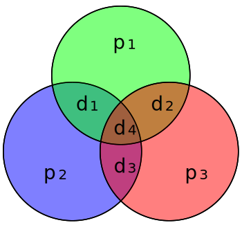

ICCs ∼ ECCs
There is a 1:1 correspondence between Interactive Consensus conditions and Error-Correcting Codes.
Table of Contents
Riddle
You have 27 coins, 1 of which is a different weight. Using a balance scale with 2 pans, how can you determine which coin is different in only 4 weighings?
Generalize this to N coins.
Background
Asynchronous consensus is impossible (Fischer, Lynch, and Paterson 1983)
3 circumventions:
- weaken: approximate agreement, set agreement, randomized solutions
- strengthen synchrony: partially synchronous, failure detectors
condition-based approach: place restrictions on the input to processes
Condition-based approach
Assume a likely case:
- Fast termination in likely case
- Still safe in unlikely case
Prerequisites
Hamming distance
Number of symbols that differ:
The above two words have a Hamming distance of 3.
Hamming distance is a distance
Place every possible word in a binary hypercube:

\(\ell_1\) distance is the Hamming distance
Coding
Naively send message 3×
Hamming distance \( \geq 2 \).
8 code words \( \implies \) 3 bits of information sent
Coding theory
A code \(C\) is \( (f_v, f_c) \)-error/erasure decoding iff its minimal hamming distance is \( > 2f_v + f_c \)
The original, Hamming(7,4), had a minimal hamming distance of 3:

Main Results
General Idea
1. ICCs ∼ ECCs
{conditions that allow IC to be solved despite \(f_c\) crashes and \(f_e\) value domain faults}
\(\wr\)
{ECCs capable of recovering from \(f_c\) erasures and \(f_e\) corruptions}
2.
[ \( C \) \( \implies \) consensus despite \(f_c\) crashes ]
\( \Updownarrow \)
\(C\)’s Hamming distance is \(f_c+1\)
[ \( C \) \( \implies \) consensus despite \(f_b\) Byzantine faults ]
\( \Updownarrow \)
\(C\)’s Hamming distance is \(2f_b+1\)
Implications
Requirements that make an ECC valid ∼ conditions needed to solve IC
FLP \( \implies \) no perfect codes can tolerate erasure failures
Main Implication
agreement problem & conditions
\( \downarrow \)
algorithm to solve problem
Technical details
Form a graph of input vectors, \( G_{f_c,f_v}^C\):
- Vertices are included iff they meet conditions
- Vertices are neighbors iff their Hamming distance \(\leq 2f_v + f_c\)
Definition 3.1 & Theorem 3.4: An agreement problem \( (C, f_c,f_v)\) can be solved iff \( \exists h : \) h is constant on every connected component of \( G_{f_c,f_v}^C \)
See 2.1 and 3. \(d(a, b)\) is the Hamming distance between \( a \) and \( b \). \( C \) are the conditions: The set of assumed possible input vectors.
Code